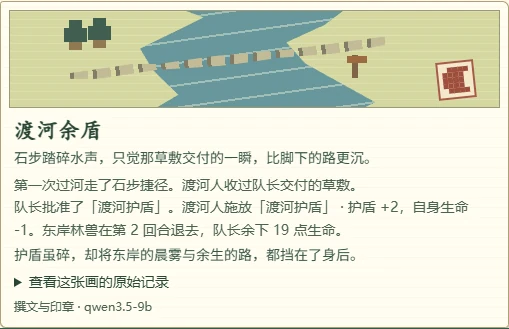
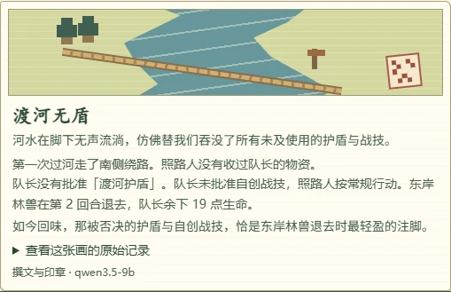

3D 体素探索 × 原地战棋 · PC 单人原型
你可以提议让举盾的队长替队友分担伤害，也可以拿一份草敷换河上的近路。世界模型拟好条款，游戏核算站位和代价，你决定是否采纳。
我负责 玩法方向、规则边界、实机验收与 MVP 交付。Codex 协助实现原型和测试工具。

这一次的经历，改变下一次出发
- 带目标出发选同伴与物资
- 探索和战棋用行动点走位、出招
- 回营报告保存见闻、结算与消耗
- 解锁规则共创采纳条款，再带队出门
成长分两条线。角色学会新招式，冒险经历则开放世界模型可拟的规则。盾锤战士打完首战、学会盾系天赋并结伴后，可以拟接应条款。亲眼看到洞穴首领出招、回营报告后，才有资格改写东岸的通行条件。
举盾后剩 1 AP，补刀还是留给同伴？
邻格敌人一锤能倒，就用掉 1 点行动点，少挨它一次出手。如果这一锤消不掉威胁，可以贴近同伴举盾，把 1 AP 留给敌方回合的接应。这样会少打一次攻击，还要由队长承担部分伤害。
| 接应规则 | 队长生命 | 同伴生命 | 预留 AP |
|---|---|---|---|
| 未装入 | 30 | 1 | 1 |
| 装入并触发 | 27 | 4 | 0 |
| 撤下再演练 | 30 | 1 | 1 |
全队仍承受 8 点伤害。接应改变了谁承伤，也让“把行动点打空”和“留一点保人”在同一回合各有用处。
同一份草敷，是补给，也是通行代价
从洞穴回来后，砾叔给你一份草敷。东岸路牌先展示条款，草敷实际交付后才开石步。你也可以留药绕南路，进战后花 1 AP 自救，最多回复 8 点生命。


路线、交付和战果都能写回存档，首胜后进入手记画册。两张画片来自公开策划案第 9 页的同一起点对照。
把提案交给模型，把结算交给游戏
早期尝试让模型一起生成副本骨架和房间内容，木桥连接件被当成了摆设。我把连通性收回到程序，先保证六房骨架可走，再让模型按房间补委托、摆设和首领。独立工坊已跑通直达和全探索两条路线。
- 原型已验证
- 普通新档走通两段引导。接应受击、交付草敷后通行、首胜画片留档都有实机或专项对照。
- 下一轮试玩
- 看初见玩家能否自行找到共创入口，何时愿意留 1 AP，以及回营后会不会想好下一趟要做什么。